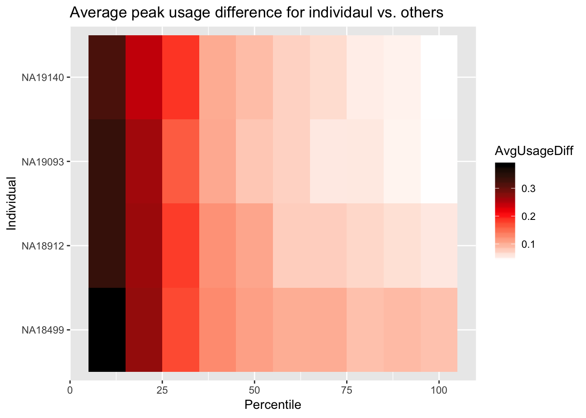

Last updated: 2019-02-25
Checks: 6 0
Knit directory: threeprimeseq/analysis/
This reproducible R Markdown analysis was created with workflowr (version 1.2.0). The Report tab describes the reproducibility checks that were applied when the results were created. The Past versions tab lists the development history.
Great! Since the R Markdown file has been committed to the Git repository, you know the exact version of the code that produced these results.
Great job! The global environment was empty. Objects defined in the global environment can affect the analysis in your R Markdown file in unknown ways. For reproduciblity it’s best to always run the code in an empty environment.
The command set.seed(12345) was run prior to running the code in the R Markdown file. Setting a seed ensures that any results that rely on randomness, e.g. subsampling or permutations, are reproducible.
Great job! Recording the operating system, R version, and package versions is critical for reproducibility.
Nice! There were no cached chunks for this analysis, so you can be confident that you successfully produced the results during this run.
Great! You are using Git for version control. Tracking code development and connecting the code version to the results is critical for reproducibility. The version displayed above was the version of the Git repository at the time these results were generated.
Note that you need to be careful to ensure that all relevant files for the analysis have been committed to Git prior to generating the results (you can use wflow_publish or wflow_git_commit). workflowr only checks the R Markdown file, but you know if there are other scripts or data files that it depends on. Below is the status of the Git repository when the results were generated:
Ignored files:
Ignored: .DS_Store
Ignored: .Rhistory
Ignored: .Rproj.user/
Ignored: data/.DS_Store
Ignored: data/perm_QTL_trans_noMP_5percov/
Ignored: output/.DS_Store
Untracked files:
Untracked: KalistoAbundance18486.txt
Untracked: analysis/4suDataIGV.Rmd
Untracked: analysis/DirectionapaQTL.Rmd
Untracked: analysis/EvaleQTLs.Rmd
Untracked: analysis/YL_QTL_test.Rmd
Untracked: analysis/fixBWChromNames.Rmd
Untracked: analysis/groSeqAnalysis.Rmd
Untracked: analysis/ncbiRefSeq_sm.sort.mRNA.bed
Untracked: analysis/snake.config.notes.Rmd
Untracked: analysis/verifyBAM.Rmd
Untracked: analysis/verifybam_dubs.Rmd
Untracked: code/PeaksToCoverPerReads.py
Untracked: code/strober_pc_pve_heatmap_func.R
Untracked: data/18486.genecov.txt
Untracked: data/APApeaksYL.total.inbrain.bed
Untracked: data/AllPeak_counts/
Untracked: data/ApaQTLs/
Untracked: data/ApaQTLs_otherPhen/
Untracked: data/ChromHmmOverlap/
Untracked: data/DistTXN2Peak_genelocAnno/
Untracked: data/GM12878.chromHMM.bed
Untracked: data/GM12878.chromHMM.txt
Untracked: data/LianoglouLCL/
Untracked: data/LocusZoom/
Untracked: data/LocusZoom_proc/
Untracked: data/MatchedSnps/
Untracked: data/NuclearApaQTLs.txt
Untracked: data/PeakCounts/
Untracked: data/PeakCounts_noMP_5perc/
Untracked: data/PeakCounts_noMP_genelocanno/
Untracked: data/PeakUsage/
Untracked: data/PeakUsage_noMP/
Untracked: data/PeakUsage_noMP_GeneLocAnno/
Untracked: data/PeaksUsed/
Untracked: data/PeaksUsed_noMP_5percCov/
Untracked: data/QTL_overlap/
Untracked: data/RNAkalisto/
Untracked: data/RefSeq_annotations/
Untracked: data/Replicates_usage/
Untracked: data/TotalApaQTLs.txt
Untracked: data/Totalpeaks_filtered_clean.bed
Untracked: data/UnderstandPeaksQC/
Untracked: data/WASP_STAT/
Untracked: data/YL-SP-18486-T-combined-genecov.txt
Untracked: data/YL-SP-18486-T_S9_R1_001-genecov.txt
Untracked: data/YL_QTL_test/
Untracked: data/apaExamp/
Untracked: data/apaExamp_proc/
Untracked: data/apaQTL_examp_noMP/
Untracked: data/bedgraph_peaks/
Untracked: data/bin200.5.T.nuccov.bed
Untracked: data/bin200.Anuccov.bed
Untracked: data/bin200.nuccov.bed
Untracked: data/clean_peaks/
Untracked: data/comb_map_stats.csv
Untracked: data/comb_map_stats.xlsx
Untracked: data/comb_map_stats_39ind.csv
Untracked: data/combined_reads_mapped_three_prime_seq.csv
Untracked: data/diff_iso_GeneLocAnno/
Untracked: data/diff_iso_proc/
Untracked: data/diff_iso_trans/
Untracked: data/ensemble_to_genename.txt
Untracked: data/example_gene_peakQuant/
Untracked: data/explainProtVar/
Untracked: data/filtPeakOppstrand_cov_noMP_GeneLocAnno_5perc/
Untracked: data/filtered_APApeaks_merged_allchrom_refseqTrans.closest2End.bed
Untracked: data/filtered_APApeaks_merged_allchrom_refseqTrans.closest2End.noties.bed
Untracked: data/first50lines_closest.txt
Untracked: data/gencov.test.csv
Untracked: data/gencov.test.txt
Untracked: data/gencov_zero.test.csv
Untracked: data/gencov_zero.test.txt
Untracked: data/gene_cov/
Untracked: data/joined
Untracked: data/leafcutter/
Untracked: data/merged_combined_YL-SP-threeprimeseq.bg
Untracked: data/molPheno_noMP/
Untracked: data/mol_overlap/
Untracked: data/mol_pheno/
Untracked: data/nom_QTL/
Untracked: data/nom_QTL_opp/
Untracked: data/nom_QTL_trans/
Untracked: data/nuc6up/
Untracked: data/nuc_10up/
Untracked: data/other_qtls/
Untracked: data/pQTL_otherphen/
Untracked: data/peakPerRefSeqGene/
Untracked: data/perm_QTL/
Untracked: data/perm_QTL_GeneLocAnno_noMP_5percov/
Untracked: data/perm_QTL_GeneLocAnno_noMP_5percov_3UTR/
Untracked: data/perm_QTL_diffWindow/
Untracked: data/perm_QTL_opp/
Untracked: data/perm_QTL_trans/
Untracked: data/perm_QTL_trans_filt/
Untracked: data/protAndAPAAndExplmRes.Rda
Untracked: data/protAndAPAlmRes.Rda
Untracked: data/protAndExpressionlmRes.Rda
Untracked: data/reads_mapped_three_prime_seq.csv
Untracked: data/smash.cov.results.bed
Untracked: data/smash.cov.results.csv
Untracked: data/smash.cov.results.txt
Untracked: data/smash_testregion/
Untracked: data/ssFC200.cov.bed
Untracked: data/temp.file1
Untracked: data/temp.file2
Untracked: data/temp.gencov.test.txt
Untracked: data/temp.gencov_zero.test.txt
Untracked: data/threePrimeSeqMetaData.csv
Untracked: data/threePrimeSeqMetaData55Ind.txt
Untracked: data/threePrimeSeqMetaData55Ind.xlsx
Untracked: data/threePrimeSeqMetaData55Ind_noDup.txt
Untracked: data/threePrimeSeqMetaData55Ind_noDup.xlsx
Untracked: data/threePrimeSeqMetaData55Ind_noDup_WASPMAP.txt
Untracked: data/threePrimeSeqMetaData55Ind_noDup_WASPMAP.xlsx
Untracked: data/~$threePrimeSeqMetaData55Ind_noDup_WASPMAP.xlsx
Untracked: output/deeptools_plots/
Untracked: output/picard/
Untracked: output/plots/
Untracked: output/qual.fig2.pdf
Unstaged changes:
Modified: analysis/28ind.peak.explore.Rmd
Modified: analysis/CompareLianoglouData.Rmd
Modified: analysis/NewPeakPostMP.Rmd
Modified: analysis/apaQTLoverlapGWAS.Rmd
Modified: analysis/cleanupdtseq.internalpriming.Rmd
Modified: analysis/coloc_apaQTLs_protQTLs.Rmd
Modified: analysis/dif.iso.usage.leafcutter.Rmd
Modified: analysis/diffIsoAnalysisNewMapping.Rmd
Modified: analysis/diff_iso_pipeline.Rmd
Modified: analysis/explainpQTLs.Rmd
Modified: analysis/explore.filters.Rmd
Modified: analysis/flash2mash.Rmd
Modified: analysis/mispriming_approach.Rmd
Modified: analysis/overlapMolQTL.Rmd
Modified: analysis/overlapMolQTL.opposite.Rmd
Modified: analysis/overlap_qtls.Rmd
Modified: analysis/peakOverlap_oppstrand.Rmd
Modified: analysis/peakQCPPlots.Rmd
Modified: analysis/pheno.leaf.comb.Rmd
Modified: analysis/pipeline_55Ind.Rmd
Modified: analysis/swarmPlots_QTLs.Rmd
Modified: analysis/test.max2.Rmd
Modified: analysis/test.smash.Rmd
Modified: analysis/understandPeaks.Rmd
Modified: code/Snakefile
Note that any generated files, e.g. HTML, png, CSS, etc., are not included in this status report because it is ok for generated content to have uncommitted changes.
These are the previous versions of the R Markdown and HTML files. If you’ve configured a remote Git repository (see ?wflow_git_remote), click on the hyperlinks in the table below to view them.
| File | Version | Author | Date | Message |
|---|---|---|---|---|
| Rmd | bd4b3dc | Briana Mittleman | 2019-02-25 | add usage diff heatplot |
library(workflowr)This is workflowr version 1.2.0
Run ?workflowr for help getting startedlibrary(tidyverse)── Attaching packages ──────────────────────────────────────────────────────────────────────────── tidyverse 1.2.1 ──✔ ggplot2 3.0.0 ✔ purrr 0.2.5
✔ tibble 1.4.2 ✔ dplyr 0.7.6
✔ tidyr 0.8.1 ✔ stringr 1.4.0
✔ readr 1.1.1 ✔ forcats 0.3.0Warning: package 'stringr' was built under R version 3.5.2── Conflicts ─────────────────────────────────────────────────────────────────────────────── tidyverse_conflicts() ──
✖ dplyr::filter() masks stats::filter()
✖ dplyr::lag() masks stats::lag()library(reshape2)
Attaching package: 'reshape2'The following object is masked from 'package:tidyr':
smithsIn this analysis I will merge replicates to see if more seq reads helps with coverage per gene and variance between peak usage score.
##Process replicate samples
/project2/gilad/briana/threeprimeseq/data/sort/
/project2/gilad/briana/threeprimeseq/data/Replicates/
/project2/gilad/briana/threeprimeseq/data/Replicates_mergedBam/
18499-N-batch4.combined.STARwWASP.bamAligned.filtered.sort.bam YL-SP-18499-N-combined-sort.bam 18499-T-batch4.combined.STARwWASP.bamAligned.filtered.sort.bam YL-SP-18499-T-combined-sort.bam
18912-N-batch4.combined.STARwWASP.bamAligned.filtered.sort.bam YL-SP-18912-N-combined-sort.bam 18912-T-batch4.combined.STARwWASP.bamAligned.filtered.sort.bam YL-SP-18912-N-combined-sort.bam
19093-N-batch4.combined.STARwWASP.bamAligned.filtered.sort.bam YL-SP-19093-N-combined-sort.bam 19093-T-batch4.combined.STARwWASP.bamAligned.filtered.sort.bam YL-SP-19093-T-combined-sort.bam
19140-N-batch4.combined.STARwWASP.bamAligned.filtered.sort.bam YL-SP-19140-N-combined-sort.bam 19140-T-batch4.combined.STARwWASP.bamAligned.filtered.sort.bam YL-SP-19140-T-combined-sort.bam
mergeReplicateBams.sh
#!/bin/bash
#SBATCH --job-name=mergeReplicateBams
#SBATCH --account=pi-yangili1
#SBATCH --time=24:00:00
#SBATCH --output=mergeReplicateBams.out
#SBATCH --error=mergeReplicateBams.err
#SBATCH --partition=bigmem2
#SBATCH --mem=100G
#SBATCH --mail-type=END
module load Anaconda3
source activate three-prime-env
for i in "18499-N" "18499-T" "18912-N" "18912-T" "19093-N" "19093-T" "19140-N" "19140-T"
do
samtools merge /project2/gilad/briana/threeprimeseq/data/Replicates_mergedBam/YL-SP-$i-mergedReps-combined.bam /project2/gilad/briana/threeprimeseq/data/sort/YL-SP-$i-combined-sort.bam /project2/gilad/briana/threeprimeseq/data/Replicates/$i-batch4.combined.STARwWASP.bamAligned.filtered.sort.bam
samtools sort /project2/gilad/briana/threeprimeseq/data/Replicates_mergedBam/YL-SP-$i-mergedReps-combined.bam > /project2/gilad/briana/threeprimeseq/data/Replicates_mergedBam/YL-SP-$i-mergedReps-combined-sort.bam
samtools index /project2/gilad/briana/threeprimeseq/data/Replicates_mergedBam/YL-SP-$i-mergedReps-combined-sort.bam
done
Bam to bed:
bam2BedandSort.replicates.sh
#!/bin/bash
#SBATCH --job-name=bam2BedandSort.replicates
#SBATCH --account=pi-yangili1
#SBATCH --time=24:00:00
#SBATCH --output=bam2BedandSort.replicates.out
#SBATCH --error=bam2BedandSort.replicates.err
#SBATCH --partition=broadwl
#SBATCH --mem=36G
#SBATCH --mail-type=END
module load Anaconda3
source activate three-prime-env
for i in $(ls /project2/gilad/briana/threeprimeseq/data/Replicates_mergedBam/*-sort.bam )
do
describer=$(echo ${i} |sed -e 's/.*YL-SP-//' | sed -e "s/-mergedReps-combined-sort.bam//")
bedtools bamtobed -i $i > /project2/gilad/briana/threeprimeseq/data/Replicates_mergedBed/YL-SP-$describer-mergedReps-combined.bed
sort -k1,1 -k2,2n /project2/gilad/briana/threeprimeseq/data/Replicates_mergedBed/YL-SP-$describer-mergedReps-combined.bed > /project2/gilad/briana/threeprimeseq/data/Replicates_mergedBed/YL-SP-$describer-mergedReps-combined-sort.bed
done
Next step is to get the 10 bp upstream:
Upstream10Bases_replicates.py
#python
def main(Fin, Fout):
outBed=open(Fout, "w")
chrom_lengths=open("/project2/gilad/briana/genome_anotation_data/chrom_lengths2.sort.bed","r")
#make a dictionary with chrom lengths
length_dic={}
for i in chrom_lengths:
chrom, start, end = i.split()
length_dic[str(chrom)]=int(end)
#write file
for ln in open(Fin):
chrom, start, end, name, score, strand = ln.split()
chrom=str(chrom)
if strand=="+":
start_new=int(start)-10
if start_new <= 1:
start_new = 0
end_new= int(start)
if end_new == 0:
end_new=1
outBed.write("%s\t%d\t%d\t%s\t%s\t%s\n"%(chrom, start_new, end_new, name, score, strand))
if strand == "-":
start_new=int(end)
end_new=int(end) + 10
if end_new >= length_dic[chrom]:
end_new = length_dic[chrom]
start_new=end_new-1
outBed.write("%s\t%d\t%d\t%s\t%s\t%s\n"%(chrom, start_new, end_new, name, score, strand))
outBed.close()
if __name__ == "__main__":
import sys
inFile = sys.argv[1]
fileNoPath=inFile.split("/")[-1]
fileshort=fileNoPath[:-4]
outFile="/project2/gilad/briana/threeprimeseq/data/Replicates_bed_10up/" + fileshort + "10up.bed"
main(inFile, outFile)wrap_Upstream10Bases_rep.sh
#!/bin/bash
#SBATCH --job-name=w_Upstream10Bases_rep
#SBATCH --account=pi-yangili1
#SBATCH --time=8:00:00
#SBATCH --output=w_Upstream10Bases_rep.out
#SBATCH --error=w_Upstream10Bases_rep.err
#SBATCH --partition=broadwl
#SBATCH --mem=8G
#SBATCH --mail-type=END
module load Anaconda3
source activate three-prime-env
for i in $(ls /project2/gilad/briana/threeprimeseq/data/Replicates_mergedBed/*sort.bed); do
python Upstream10Bases_replicates.py $i
doneNuc10BasesUp_replicate.sh
#!/bin/bash
#SBATCH --job-name=Nuc10BasesUp_replicate
#SBATCH --account=pi-yangili1
#SBATCH --time=8:00:00
#SBATCH --output=Nuc10BasesUp_replicate.out
#SBATCH --error=Nuc10BasesUp_replicate.err
#SBATCH --partition=broadwl
#SBATCH --mem=36G
#SBATCH --mail-type=END
for i in $(ls /project2/gilad/briana/threeprimeseq/data/Replicates_bed_10up/*);do
describer=$(echo ${i} | sed -e 's/.*YL-SP-//' | sed -e "s/-mergedReps-combined-sort10up.bed$//")
bedtools nuc -s -seq -fi /project2/gilad/briana/genome_anotation_data/genome/Homo_sapiens.GRCh37.75.dna_sm.all.fa -bed $i > /project2/gilad/briana/threeprimeseq/data/Replicates_nuc_10up/TenBaseUP.${describer}.txt
donereplicates_filterMissprimingInNuc10.py
def main(Fin, Fout):
outBed=open(Fout, "w")
inBed=open(Fin, "r")
for ind, ln in enumerate(inBed):
if ind >=1:
chrom,start, end, name, score, strand, pctAT, pctGC, A, C, G, T, N, Other, Length, Sequence = ln.split()
Tperc= float(T) / float(Length)
if Tperc < .7:
if "TTTTTT" not in Sequence:
start_new=int(start)
end_new=int(end)
outBed.write("%s\t%d\t%d\t%s\t%s\t%s\n"%(chrom, start_new, end_new , name, score, strand))
outBed.close()
if __name__ == "__main__":
import sys
inFile = sys.argv[1]
fileNoPath=inFile.split("/")[-1]
sampleName=fileNoPath.split(".")[1]
outFile="/project2/gilad/briana/threeprimeseq/data/Replicates_nuc_10up_CleanReads/TenBaseUP." + sampleName + ".CleanReads.bed"
main(inFile, outFile)run_filterMissprimingInNuc10_rep.sh
#!/bin/bash
#SBATCH --job-name=run_filterMissprimingInNuc10_rep
#SBATCH --account=pi-yangili1
#SBATCH --time=8:00:00
#SBATCH --output=run_filterMissprimingInNuc10_rep.out
#SBATCH --error=c
#SBATCH --partition=broadwl
#SBATCH --mem=36G
#SBATCH --mail-type=END
for i in $(ls /project2/gilad/briana/threeprimeseq/data/Replicates_nuc_10up/*);do
python filterMissprimingInNuc10.py $i
done filterSortBedbyCleanedBed_rep.R
#!/bin/rscripts
# usage: Rscirpt --vanilla filterSortBedbyCleanedBed.R identifier
#this script takes in the sorted bed file and the clean reads, it will clean the bed file
library(dplyr)
library(tidyr)
library(data.table)
args = commandArgs(trailingOnly=TRUE)
identifier=args[1]
sortBedName= paste("/project2/gilad/briana/threeprimeseq/data/Replicates_mergedBed/YL-SP-", identifier, "-mergedReps-combined-sort.bed", sep="")
CleanName= paste("/project2/gilad/briana/threeprimeseq/data/Replicates_nuc_10up_CleanReads/TenBaseUP.", identifier, ".CleanReads.bed", sep="")
outFile= paste("/project2/gilad/briana/threeprimeseq/data/Replicates_bed_sort_CleanedMP/YL-SP-", identifier, "-combined-sort.clean.bed", sep="")
bedFile=fread(sortBedName, col.names = c("Chrom", "start", "end", "name", "score", "strand"))
cleanFile=fread(CleanName, col.names = c("Chrom", "start", "end", "name", "score", "strand"))
intersection=bedFile %>% semi_join(cleanFile, by="name")
fwrite(intersection, file=outFile,quote = F, col.names = F, row.names = F, sep="\t")run_filterSortBedbyCleanedBed_replicates.sh
#!/bin/bash
#SBATCH --job-name=run_filterSortBedbyCleanedBed
#SBATCH --account=pi-yangili1
#SBATCH --time=8:00:00
#SBATCH --output=run_filterSortBedbyCleanedBed.out
#SBATCH --error=run_filterSortBedbyCleanedBed.err
#SBATCH --partition=broadwl
#SBATCH --mem=36G
#SBATCH --mail-type=END
module load Anaconda3
source activate three-prime-env
for i in $(ls /project2/gilad/briana/threeprimeseq/data/Replicates_nuc_10up_CleanReads/*);do
describer=$(echo ${i} | sed -e 's/.*TenBaseUP.//' | sed -e "s/.CleanReads.bed//")
Rscript --vanilla filterSortBedbyCleanedBed_rep.R ${describer}
done
sort_filterSortBedbyCleanedBed_rep.sh
#!/bin/bash
#SBATCH --job-name=sort_filterSortBedbyCleanedBed_rep
#SBATCH --account=pi-yangili1
#SBATCH --time=8:00:00
#SBATCH --output=sort_filterSortBedbyCleanedBed_rep.out
#SBATCH --error=sort_filterSortBedbyCleanedBed_rep.err
#SBATCH --partition=broadwl
#SBATCH --mem=36G
#SBATCH --mail-type=END
module load Anaconda3
source activate three-prime-env
for i in $(ls /project2/gilad/briana/threeprimeseq/data/Replicates_bed_sort_CleanedMP/*);do
describer=$(echo ${i} | sed -e 's/.*YL-SP-//' | sed -e "s/-combined-sort.clean.bed//")
bedtools sort -faidx /project2/gilad/briana/threeprimeseq/code/chromOrder.num.txt -i /project2/gilad/briana/threeprimeseq/data/Replicates_bed_sort_CleanedMP/YL-SP-${describer}-combined-sort.clean.bed > /project2/gilad/briana/threeprimeseq/data/Replicates_bed_sort_CleanedMP/YL-SP-${describer}-combined-sort.clean.sorted.bed
donefilterBamforMP.pysam2_rep.py
#!/usr/bin/env python
"""
Usage: python filterBamforMP.pysam2_rep.py <describer>
"""
def main(Bin, Bamin, out):
okRead={}
for ln in open(Bin, "r"):
chrom, start_new , end_new , name, score, strand = ln.split()
okRead[name] = ""
#pysam to read in bam allignments
bamfile = pysam.AlignmentFile(Bamin, "rb")
finalBam = pysam.AlignmentFile(out, "wb", template=bamfile)
#read name is the first col in each bam file
n=0
for read in bamfile.fetch():
read_name=read.query_name
#if statement about name
if read_name in okRead.keys():
finalBam.write(read)
if n % 1000==0 : print(n)
n+=1
bamfile.close()
finalBam.close()
if __name__ == "__main__":
import sys, pysam
describer = sys.argv[1]
inBed= "/project2/gilad/briana/threeprimeseq/data/Replicates_bed_sort_CleanedMP/YL-SP-" + describer + "-combined-sort.clean.sorted.bed"
inBam="/project2/gilad/briana/threeprimeseq/data/Replicates_mergedBam/YL-SP-" + describer + "-mergedReps-combined-sort.bam"
outBam="/project2/gilad/briana/threeprimeseq/data/Replicates_mergedBam_NoMP/YL-SP-" + describer + "-combined-MergedReps_sort.noMP.bam"
main(inBed, inBam, outBam)wrap_filterBamforMP.pysam2_rep.sh
#!/bin/bash
#SBATCH --job-name=wrap_filterBamforMP.pysam2_rep
#SBATCH --account=pi-yangili1
#SBATCH --time=36:00:00
#SBATCH --output=wrap_filterBamforMP.pysam2_rep.out
#SBATCH --error=wrap_filterBamforMP.pysam2_rep.err
#SBATCH --partition=broadwl
#SBATCH --mem=32G
#SBATCH --mail-type=END
module load Anaconda3
source activate three-prime-env
for i in $(ls /project2/gilad/briana/threeprimeseq/data/Replicates_bed_sort_CleanedMP/*sort.clean.sorted.bed);do
describer=$(echo ${i} | sed -e 's/.*YL-SP-//' | sed -e "s/-combined-sort.clean.sorted.bed//")
python filterBamforMP.pysam2_rep.py ${describer}
doneRead counts after cleaning:
18499N-12417636 18499T-17359225 18912N-11020463 18912T-21554082 19093N-13089487 19093T-24167003
19140N- 14668172 19140T- 23520072
SortIndexBam_noMP_rep.sh
#!/bin/bash
#SBATCH --job-name=SortIndexBam_noMP_rep
#SBATCH --account=pi-yangili1
#SBATCH --time=8:00:00
#SBATCH --output=SortIndexBam_noMP_rep.out
#SBATCH --error=SortIndexBam_noMP_rep.err
#SBATCH --partition=bigmem2
#SBATCH --mem=100G
#SBATCH --mail-type=END
#module load Anaconda3
#source activate three-prime-env
module load samtools
for i in $(ls /project2/gilad/briana/threeprimeseq/data/Replicates_mergedBam_NoMP/*);do
describer=$(echo ${i} | sed -e 's/.*YL-SP-//' | sed -e "s/-combined-MergedReps_sort.noMP.bam//")
samtools sort /project2/gilad/briana/threeprimeseq/data/Replicates_mergedBam_NoMP/YL-SP-${describer}-combined-MergedReps_sort.noMP.bam > /project2/gilad/briana/threeprimeseq/data/Replicates_mergedBam_NoMP/YL-SP-${describer}-combined-MergedReps_sort.noMP.sort.bam
samtools index /project2/gilad/briana/threeprimeseq/data/Replicates_mergedBam_NoMP/YL-SP-${describer}-combined-MergedReps_sort.noMP.sort.bam
done Run feature counts on the peaks
GeneLocAnno_fc_TN_noMP_rep.sh
#!/bin/bash
#SBATCH --job-name=GeneLocAnno_fc_TN_noMP_rep
#SBATCH --account=pi-yangili1
#SBATCH --time=24:00:00
#SBATCH --output=GeneLocAnno_fc_TN_noMP_rep.out
#SBATCH --error=GeneLocAnno_fc_TN_noMP_rep.err
#SBATCH --partition=broadwl
#SBATCH --mem=12G
#SBATCH --mail-type=END
module load Anaconda3
source activate three-prime-env
featureCounts -O -a /project2/gilad/briana/threeprimeseq/data/mergedPeaks_noMP_GeneLoc/Filtered_APApeaks_merged_allchrom_noMP.sort.named.noCHR_geneLocParsed.SAF -F SAF -o /project2/gilad/briana/threeprimeseq/data/Replicates_filtPeakOppstrand_cov_noMP_GeneLocAnno/replicates_filtered_APApeaks_merged_allchrom_refseqGenes.GeneLocAnno_NoMP_sm_quant.Total.fc /project2/gilad/briana/threeprimeseq/data/Replicates_mergedBam_NoMP/*T*.sort.bam -s 1
featureCounts -O -a /project2/gilad/briana/threeprimeseq/data/mergedPeaks_noMP_GeneLoc/Filtered_APApeaks_merged_allchrom_noMP.sort.named.noCHR_geneLocParsed.SAF -F SAF -o /project2/gilad/briana/threeprimeseq/data/Replicates_filtPeakOppstrand_cov_noMP_GeneLocAnno/replicates_filtered_APApeaks_merged_allchrom_refseqGenes.GeneLocAnno_NoMP_sm_quant.Nuclear.fc /project2/gilad/briana/threeprimeseq/data/Replicates_mergedBam_NoMP/*N*.sort.bam -s 1
Fix header:
fix_head_fc_geneLoc_tot_noMP_rep.py
infile= open("/project2/gilad/briana/threeprimeseq/data/Replicates_filtPeakOppstrand_cov_noMP_GeneLocAnno/replicates_filtered_APApeaks_merged_allchrom_refseqGenes.GeneLocAnno_NoMP_sm_quant.Total.fc", "r")
fout = open("/project2/gilad/briana/threeprimeseq/data/Replicates_filtPeakOppstrand_cov_noMP_GeneLocAnno/replicates_filtered_APApeaks_merged_allchrom_refseqGenes.GeneLocAnno_NoMP_sm_quant.Total.fixed.fc",'w')
for line, i in enumerate(infile):
if line == 1:
i_list=i.split()
libraries=i_list[:6]
for sample in i_list[6:]:
full = sample.split("/")[7]
samp= full.split("-")[2:4]
lim="_"
samp_st=lim.join(samp)
libraries.append(samp_st)
first_line= "\t".join(libraries)
fout.write(first_line + '\n')
else :
fout.write(i)
fout.close()fix_head_fc_geneLoc_nuc_noMP_rep.py
infile= open("/project2/gilad/briana/threeprimeseq/data/Replicates_filtPeakOppstrand_cov_noMP_GeneLocAnno/replicates_filtered_APApeaks_merged_allchrom_refseqGenes.GeneLocAnno_NoMP_sm_quant.Nuclear.fc", "r")
fout = open("/project2/gilad/briana/threeprimeseq/data/Replicates_filtPeakOppstrand_cov_noMP_GeneLocAnno/replicates_filtered_APApeaks_merged_allchrom_refseqGenes.GeneLocAnno_NoMP_sm_quant.Nuclear.fixed.fc",'w')
for line, i in enumerate(infile):
if line == 1:
i_list=i.split()
libraries=i_list[:6]
for sample in i_list[6:]:
full = sample.split("/")[7]
samp= full.split("-")[2:4]
lim="_"
samp_st=lim.join(samp)
libraries.append(samp_st)
first_line= "\t".join(libraries)
fout.write(first_line + '\n')
else :
fout.write(i)
fout.close()Make phenotype:
create_fileid_geneLocAnno_nuclear_rep.py
fout = open("/project2/gilad/briana/threeprimeseq/data/Replicates_filtPeakOppstrand_cov_noMP_GeneLocAnno/replicates_file_id_mapping_nuclear_Transcript_head.txt",'w')
infile= open("/project2/gilad/briana/threeprimeseq/data/Replicates_filtPeakOppstrand_cov_noMP_GeneLocAnno/replicates_filtered_APApeaks_merged_allchrom_refseqGenes.GeneLocAnno_NoMP_sm_quant.Nuclear.fixed.fc", "r")
for line, i in enumerate(infile):
if line == 0:
i_list=i.split()
files= i_list[10:-2]
for each in files:
full = each.split("/")[7]
samp= full.split("-")[2:4]
lim="_"
samp_st=lim.join(samp)
outLine= full[:-1] + "\t" + samp_st
fout.write(outLine + "\n")
fout.close()create_fileid_geneLocAnno_Total_rep.py
fout = open("/project2/gilad/briana/threeprimeseq/data/Replicates_filtPeakOppstrand_cov_noMP_GeneLocAnno/replicates_file_id_mapping_total_Transcript_head.txt",'w')
infile= open("/project2/gilad/briana/threeprimeseq/data/Replicates_filtPeakOppstrand_cov_noMP_GeneLocAnno/replicates_filtered_APApeaks_merged_allchrom_refseqGenes.GeneLocAnno_NoMP_sm_quant.Total.fixed.fc", "r")
for line, i in enumerate(infile):
if line == 0:
i_list=i.split()
files= i_list[10:-2]
for each in files:
full = each.split("/")[7]
samp= full.split("-")[2:4]
lim="_"
samp_st=lim.join(samp)
outLine= full[:-1] + "\t" + samp_st
fout.write(outLine + "\n")
fout.close()makePhenoRefSeqPeaks_GeneLoc_Total_noMP_rep.py
#PYTHON 3
dic_IND = {}
dic_BAM = {}
for ln in open("/project2/gilad/briana/threeprimeseq/data/Replicates_filtPeakOppstrand_cov_noMP_GeneLocAnno/replicates_file_id_mapping_total_Transcript_head.txt"):
bam, IND = ln.split("\t")
IND = IND.strip()
dic_IND[bam] = IND
if IND not in dic_BAM:
dic_BAM[IND] = []
dic_BAM[IND].append(bam)
#now I have ind dic with keys as the bam and ind as the values
#I also have a bam dic with ind as the keys and bam as the values
inds=list(dic_BAM.keys()) #list of ind libraries
#gene start and end dictionaries:
dic_geneS = {}
dic_geneE = {}
for ln in open("/project2/gilad/briana/genome_anotation_data/RefSeq_annotations/ncbiRefSeq_endAllGenes.sort.bed"):
chrom, start, end, geneID, score, strand = ln.split('\t')
gene= geneID.split(":")[1]
# if "-" in gene:
# gene=gene.split("-")[0]
if gene not in dic_geneS:
dic_geneS[gene]=int(start)
dic_geneE[gene]=int(end)
#list of genes
count_file=open("/project2/gilad/briana/threeprimeseq/data/Replicates_filtPeakOppstrand_cov_noMP_GeneLocAnno/replicates_filtered_APApeaks_merged_allchrom_refseqGenes.GeneLocAnno_NoMP_sm_quant.Total.fixed.fc", "r")
genes=[]
for line , i in enumerate(count_file):
if line > 1:
i_list=i.split()
id=i_list[0]
id_list=id.split(":")
gene=id_list[5]
if gene not in genes:
genes.append(gene)
#make the ind and gene dic
dic_dub={}
for g in genes:
dic_dub[g]={}
for i in inds:
dic_dub[g][i]=0
#populate the dictionary
count_file=open("/project2/gilad/briana/threeprimeseq/data/Replicates_filtPeakOppstrand_cov_noMP_GeneLocAnno/replicates_filtered_APApeaks_merged_allchrom_refseqGenes.GeneLocAnno_NoMP_sm_quant.Total.fixed.fc", "r")
for line, i in enumerate(count_file):
if line > 1:
i_list=i.split()
id=i_list[0]
id_list=id.split(":")
g= id_list[5]
values=list(i_list[6:])
list_list=[]
for ind,val in zip(inds, values):
list_list.append([ind, val])
for num, name in enumerate(list_list):
dic_dub[g][list_list[num][0]] += int(list_list[num][1])
#write the file by acessing the dictionary and putting values in the table ver the value in the dic
fout=open("/project2/gilad/briana/threeprimeseq/data/Replicates_phenotypes_filtPeakTranscript_noMP_GeneLocAnno/replicates_filtered_APApeaks_merged_allchrom_refseqGenes.GeneLocAnno_NoMP_sm_quant.Total.fixed.pheno.fc","w")
peak=["chrom"]
inds_noL=[]
for each in inds:
indsNA= "NA" + each[:-2]
inds_noL.append(indsNA)
fout.write(" ".join(peak + inds_noL) + '\n' )
count_file=open("/project2/gilad/briana/threeprimeseq/data/Replicates_filtPeakOppstrand_cov_noMP_GeneLocAnno/replicates_filtered_APApeaks_merged_allchrom_refseqGenes.GeneLocAnno_NoMP_sm_quant.Total.fixed.fc", "r")
for line , i in enumerate(count_file):
if line > 1:
i_list=i.split()
id=i_list[0]
id_list=id.split(":")
gene=id_list[5]
#start=dic_geneS[id_list[5]]
start=int(id_list[2])
#end=dic_geneE[id_list[5]]
end=int(id_list[3])
buff=[]
buff.append("chr%s:%d:%d:%s_%s_%s"%(id_list[1], start, end, id_list[5], id_list[4], id_list[0]))
for x,y in zip(i_list[6:], inds):
b=int(dic_dub[gene][y])
t=int(x)
buff.append("%d/%d"%(t,b))
fout.write(" ".join(buff)+ '\n')
fout.close()makePhenoRefSeqPeaks_GeneLoc_Nuclear_noMP_rep.py
#PYTHON 3
dic_IND = {}
dic_BAM = {}
for ln in open("/project2/gilad/briana/threeprimeseq/data/Replicates_filtPeakOppstrand_cov_noMP_GeneLocAnno/replicates_file_id_mapping_nuclear_Transcript_head.txt"):
bam, IND = ln.split("\t")
IND = IND.strip()
dic_IND[bam] = IND
if IND not in dic_BAM:
dic_BAM[IND] = []
dic_BAM[IND].append(bam)
#now I have ind dic with keys as the bam and ind as the values
#I also have a bam dic with ind as the keys and bam as the values
inds=list(dic_BAM.keys()) #list of ind libraries
#gene start and end dictionaries:
dic_geneS = {}
dic_geneE = {}
for ln in open("/project2/gilad/briana/genome_anotation_data/RefSeq_annotations/ncbiRefSeq_endAllGenes.sort.bed"):
chrom, start, end, geneID, score, strand = ln.split('\t')
gene= geneID.split(":")[1]
# if "-" in gene:
# gene=gene.split("-")[0]
if gene not in dic_geneS:
dic_geneS[gene]=int(start)
dic_geneE[gene]=int(end)
#list of genes
count_file=open("/project2/gilad/briana/threeprimeseq/data/Replicates_filtPeakOppstrand_cov_noMP_GeneLocAnno/replicates_filtered_APApeaks_merged_allchrom_refseqGenes.GeneLocAnno_NoMP_sm_quant.Nuclear.fixed.fc", "r")
genes=[]
for line , i in enumerate(count_file):
if line > 1:
i_list=i.split()
id=i_list[0]
id_list=id.split(":")
gene=id_list[5]
if gene not in genes:
genes.append(gene)
#make the ind and gene dic
dic_dub={}
for g in genes:
dic_dub[g]={}
for i in inds:
dic_dub[g][i]=0
#populate the dictionary
count_file=open("/project2/gilad/briana/threeprimeseq/data/Replicates_filtPeakOppstrand_cov_noMP_GeneLocAnno/replicates_filtered_APApeaks_merged_allchrom_refseqGenes.GeneLocAnno_NoMP_sm_quant.Nuclear.fixed.fc", "r")
for line, i in enumerate(count_file):
if line > 1:
i_list=i.split()
id=i_list[0]
id_list=id.split(":")
g= id_list[5]
values=list(i_list[6:])
list_list=[]
for ind,val in zip(inds, values):
list_list.append([ind, val])
for num, name in enumerate(list_list):
dic_dub[g][list_list[num][0]] += int(list_list[num][1])
#write the file by acessing the dictionary and putting values in the table ver the value in the dic
fout=open("/project2/gilad/briana/threeprimeseq/data/Replicates_phenotypes_filtPeakTranscript_noMP_GeneLocAnno/replicates_filtered_APApeaks_merged_allchrom_refseqGenes.GeneLocAnno_NoMP_sm_quant.Nuclear.fixed.pheno.fc","w")
peak=["chrom"]
inds_noL=[]
for each in inds:
indsNA= "NA" + each[:-2]
inds_noL.append(indsNA)
fout.write(" ".join(peak + inds_noL) + '\n' )
count_file=open("/project2/gilad/briana/threeprimeseq/data/Replicates_filtPeakOppstrand_cov_noMP_GeneLocAnno/replicates_filtered_APApeaks_merged_allchrom_refseqGenes.GeneLocAnno_NoMP_sm_quant.Nuclear.fixed.fc", "r")
for line , i in enumerate(count_file):
if line > 1:
i_list=i.split()
id=i_list[0]
id_list=id.split(":")
gene=id_list[5]
#start=dic_geneS[id_list[5]]
start=int(id_list[2])
#end=dic_geneE[id_list[5]]
end=int(id_list[3])
buff=[]
buff.append("chr%s:%d:%d:%s_%s_%s"%(id_list[1], start, end, id_list[5], id_list[4], id_list[0]))
for x,y in zip(i_list[6:], inds):
b=int(dic_dub[gene][y])
t=int(x)
buff.append("%d/%d"%(t,b))
fout.write(" ".join(buff)+ '\n')
fout.close()run_makePhen_sep_GeneLocAnno_noMP_rep.sh
#!/bin/bash
#SBATCH --job-name=run_makePhen_sep_GeneLocAnno_noMP_rep
#SBATCH --account=pi-yangili1
#SBATCH --time=24:00:00
#SBATCH --output=run_makePhen_sep_GeneLocAnno_noMP_rep.out
#SBATCH --error=run_makePhen_sep_GeneLocAnno_noMP_rep.err
#SBATCH --partition=broadwl
#SBATCH --mem=12G
#SBATCH --mail-type=END
module load Anaconda3
source activate three-prime-env
python makePhenoRefSeqPeaks_GeneLoc_Total_noMP_rep.py
python makePhenoRefSeqPeaks_GeneLoc_Nuclear_noMP_rep.py Next filter 5% peaks (5% from full sample analysis)
filterPheno_bothFraction_GeneLocAnno_5perc_rep.py
#python
totalokPeaks5perc_file="/project2/gilad/briana/threeprimeseq/data/phenotypes_filtPeakTranscript_noMP_GeneLocAnno/filtered_APApeaks_merged_allchrom_refseqGenes.GeneLocAnno.NoMP_sm_quant.Total_fixed.pheno.5percPeaks.txt"
totalokPeaks5perc={}
for ln in open(totalokPeaks5perc_file,"r"):
peakname=ln.split()[5]
totalokPeaks5perc[peakname]=""
nuclearokPeaks5perc_file="/project2/gilad/briana/threeprimeseq/data/phenotypes_filtPeakTranscript_noMP_GeneLocAnno/filtered_APApeaks_merged_allchrom_refseqGenes.GeneLocAnno.NoMP_sm_quant.Nuclear_fixed.pheno.5percPeaks.txt"
nuclearokPeaks5perc={}
for ln in open(nuclearokPeaks5perc_file,"r"):
peakname=ln.split()[5]
nuclearokPeaks5perc[peakname]=""
totalPhenoBefore=open("/project2/gilad/briana/threeprimeseq/data/Replicates_phenotypes_filtPeakTranscript_noMP_GeneLocAnno/replicates_filtered_APApeaks_merged_allchrom_refseqGenes.GeneLocAnno_NoMP_sm_quant.Total.fixed.pheno.fc","r")
totalPhenoAfter=open("/project2/gilad/briana/threeprimeseq/data/Replicates_phenotypes_filtPeakTranscript_noMP_GeneLocAnno/replicates_filtered_APApeaks_merged_allchrom_refseqGenes.GeneLocAnno_NoMP_sm_quant.Total.fixed.pheno_5perc.fc", "w")
for num, ln in enumerate(totalPhenoBefore):
if num ==0:
totalPhenoAfter.write(ln)
else:
id=ln.split()[0].split(":")[3].split("_")[2]
if id in totalokPeaks5perc.keys():
totalPhenoAfter.write(ln)
totalPhenoAfter.close()
nuclearPhenoBefore=open("/project2/gilad/briana/threeprimeseq/data/Replicates_phenotypes_filtPeakTranscript_noMP_GeneLocAnno/replicates_filtered_APApeaks_merged_allchrom_refseqGenes.GeneLocAnno_NoMP_sm_quant.Nuclear.fixed.pheno.fc","r")
nuclearPhenoAfter=open("/project2/gilad/briana/threeprimeseq/data/Replicates_phenotypes_filtPeakTranscript_noMP_GeneLocAnno/replicates_filtered_APApeaks_merged_allchrom_refseqGenes.GeneLocAnno_NoMP_sm_quant.Nuclear.fixed.pheno_5perc.fc", "w")
for num, ln in enumerate(nuclearPhenoBefore):
if num ==0:
nuclearPhenoAfter.write(ln)
else:
id=ln.split()[0].split(":")[3].split("_")[2]
if id in nuclearokPeaks5perc.keys():
nuclearPhenoAfter.write(ln)
nuclearPhenoAfter.close() Filter the count file for good peaks:
filterCountsReplicates.py
nucCountIn=open("/project2/gilad/briana/threeprimeseq/data/Replicates_filtPeakOppstrand_cov_noMP_GeneLocAnno/replicates_filtered_APApeaks_merged_allchrom_refseqGenes.GeneLocAnno_NoMP_sm_quant.Nuclear.fixed.fc","r")
nucCountOut=open("/project2/gilad/briana/threeprimeseq/data/Replicates_filtPeakOppstrand_cov_noMP_GeneLocAnno/replicates_filtered_APApeaks_merged_allchrom_refseqGenes.GeneLocAnno_NoMP_sm_quant.Nuclear.fixed.5perc.fc","w")
totCountIn=open("/project2/gilad/briana/threeprimeseq/data/Replicates_filtPeakOppstrand_cov_noMP_GeneLocAnno/replicates_filtered_APApeaks_merged_allchrom_refseqGenes.GeneLocAnno_NoMP_sm_quant.Total.fixed.fc","r")
totCountOut=open("/project2/gilad/briana/threeprimeseq/data/Replicates_filtPeakOppstrand_cov_noMP_GeneLocAnno/replicates_filtered_APApeaks_merged_allchrom_refseqGenes.GeneLocAnno_NoMP_sm_quant.Total.fixed.5perc.fc","w")
totalokPeaks5perc_file="/project2/gilad/briana/threeprimeseq/data/phenotypes_filtPeakTranscript_noMP_GeneLocAnno/filtered_APApeaks_merged_allchrom_refseqGenes.GeneLocAnno.NoMP_sm_quant.Total_fixed.pheno.5percPeaks.txt"
totalokPeaks5perc={}
for ln in open(totalokPeaks5perc_file,"r"):
peakname=ln.split()[5]
totalokPeaks5perc[peakname]=""
nuclearokPeaks5perc_file="/project2/gilad/briana/threeprimeseq/data/phenotypes_filtPeakTranscript_noMP_GeneLocAnno/filtered_APApeaks_merged_allchrom_refseqGenes.GeneLocAnno.NoMP_sm_quant.Nuclear_fixed.pheno.5percPeaks.txt"
nuclearokPeaks5perc={}
for ln in open(nuclearokPeaks5perc_file,"r"):
peakname=ln.split()[5]
nuclearokPeaks5perc[peakname]=""
for num, ln in enumerate(totCountIn):
if num ==0:
continue
elif num==1:
totCountOut.write(ln)
else:
id=ln.split()[0].split(":")[0]
if id in totalokPeaks5perc.keys():
totCountOut.write(ln)
totCountOut.close()
for num, ln in enumerate(nucCountIn):
if num ==0:
continue
elif num==1:
nucCountOut.write(ln)
else:
id=ln.split()[0].split(":")[0]
if id in totalokPeaks5perc.keys():
nucCountOut.write(ln)
nucCountOut.close()
Convert to usage:
This takes just counts:
less /project2/gilad/briana/threeprimeseq/data/Replicates_phenotypes_filtPeakTranscript_noMP_GeneLocAnno/replicates_filtered_APApeaks_merged_allchrom_refseqGenes.GeneLocAnno_NoMP_sm_quant.Nuclear.fixed.pheno_5perc.fc | cut -f1 -d" " --complement | sed '1d' > /project2/gilad/briana/threeprimeseq/data/Replicates_phenotypes_filtPeakTranscript_noMP_GeneLocAnno/replicates_filtered_APApeaks_merged_allchrom_refseqGenes.GeneLocAnno_NoMP_sm_quant.Nuclear.fixed.pheno_5perc.fc_counts
less /project2/gilad/briana/threeprimeseq/data/Replicates_phenotypes_filtPeakTranscript_noMP_GeneLocAnno/replicates_filtered_APApeaks_merged_allchrom_refseqGenes.GeneLocAnno_NoMP_sm_quant.Total.fixed.pheno_5perc.fc | cut -f1 -d" " --complement | sed '1d' > /project2/gilad/briana/threeprimeseq/data/Replicates_phenotypes_filtPeakTranscript_noMP_GeneLocAnno/replicates_filtered_APApeaks_merged_allchrom_refseqGenes.GeneLocAnno_NoMP_sm_quant.Total.fixed.pheno_5perc.fc_countsconvertReplicates2Usage.py
def convert(infile, outfile):
final=open(outfile, "w")
for ln in open(infile, "r"):
line_list=ln.split()
new_list=[]
for i in line_list:
num, dem = i.split("/")
if dem == "0":
perc = "0.00"
else:
perc = int(num)/int(dem)
perc=round(perc,2)
perc= str(perc)
new_list.append(perc)
final.write("\t".join(new_list)+ '\n')
final.close()
convert("/project2/gilad/briana/threeprimeseq/data/Replicates_phenotypes_filtPeakTranscript_noMP_GeneLocAnno/replicates_filtered_APApeaks_merged_allchrom_refseqGenes.GeneLocAnno_NoMP_sm_quant.Nuclear.fixed.pheno_5perc.fc_counts","/project2/gilad/briana/threeprimeseq/data/Replicates_phenotypes_filtPeakTranscript_noMP_GeneLocAnno/replicates_filtered_APApeaks_merged_allchrom_refseqGenes.GeneLocAnno_NoMP_sm_quant.Nuclear.fixed.pheno_5perc_numeric.fc")
convert("/project2/gilad/briana/threeprimeseq/data/Replicates_phenotypes_filtPeakTranscript_noMP_GeneLocAnno/replicates_filtered_APApeaks_merged_allchrom_refseqGenes.GeneLocAnno_NoMP_sm_quant.Total.fixed.pheno_5perc.fc_counts","/project2/gilad/briana/threeprimeseq/data/Replicates_phenotypes_filtPeakTranscript_noMP_GeneLocAnno/replicates_filtered_APApeaks_merged_allchrom_refseqGenes.GeneLocAnno_NoMP_sm_quant.Total.fixed.pheno_5perc_numeric.fc")
Add back names:
less /project2/gilad/briana/threeprimeseq/data/Replicates_phenotypes_filtPeakTranscript_noMP_GeneLocAnno/replicates_filtered_APApeaks_merged_allchrom_refseqGenes.GeneLocAnno_NoMP_sm_quant.Nuclear.fixed.pheno_5perc.fc | cut -f1 -d" " | sed '1d' > /project2/gilad/briana/threeprimeseq/data/Replicates_phenotypes_filtPeakTranscript_noMP_GeneLocAnno/PeakIDs_Nuc.txt
less /project2/gilad/briana/threeprimeseq/data/Replicates_phenotypes_filtPeakTranscript_noMP_GeneLocAnno/replicates_filtered_APApeaks_merged_allchrom_refseqGenes.GeneLocAnno_NoMP_sm_quant.Total.fixed.pheno_5perc.fc | cut -f1 -d" " | sed '1d' > /project2/gilad/briana/threeprimeseq/data/Replicates_phenotypes_filtPeakTranscript_noMP_GeneLocAnno/PeakIDs_Tot.txt
Merge back to numeri:
paste /project2/gilad/briana/threeprimeseq/data/Replicates_phenotypes_filtPeakTranscript_noMP_GeneLocAnno/PeakIDs_Nuc.txt /project2/gilad/briana/threeprimeseq/data/Replicates_phenotypes_filtPeakTranscript_noMP_GeneLocAnno/replicates_filtered_APApeaks_merged_allchrom_refseqGenes.GeneLocAnno_NoMP_sm_quant.Nuclear.fixed.pheno_5perc_numeric.fc > /project2/gilad/briana/threeprimeseq/data/Replicates_phenotypes_filtPeakTranscript_noMP_GeneLocAnno/replicates_filtered_APApeaks_merged_allchrom_refseqGenes.GeneLocAnno_NoMP_sm_quant.Nuclear.fixed.pheno_5perc_numeric.named.fc
paste /project2/gilad/briana/threeprimeseq/data/Replicates_phenotypes_filtPeakTranscript_noMP_GeneLocAnno/PeakIDs_Tot.txt /project2/gilad/briana/threeprimeseq/data/Replicates_phenotypes_filtPeakTranscript_noMP_GeneLocAnno/replicates_filtered_APApeaks_merged_allchrom_refseqGenes.GeneLocAnno_NoMP_sm_quant.Total.fixed.pheno_5perc_numeric.fc > /project2/gilad/briana/threeprimeseq/data/Replicates_phenotypes_filtPeakTranscript_noMP_GeneLocAnno/replicates_filtered_APApeaks_merged_allchrom_refseqGenes.GeneLocAnno_NoMP_sm_quant.Total.fixed.pheno_5perc_numeric.named.fcThis analysis will mirror the analysis I did in this analysis
usageTot=read.table("../data/Replicates_usage/replicates_filtered_APApeaks_merged_allchrom_refseqGenes.GeneLocAnno_NoMP_sm_quant.Total.fixed.pheno_5perc_numeric.named.fc", header=F, stringsAsFactors = F, col.names = c("chrom", "NA18499", "NA18912", "NA19093", "NA19140"))
usageTot_2peak= usageTot %>% separate(chrom, into=c("chr", "start", "end", "geneInf"), sep =":") %>% separate(geneInf, into=c("gene", "strand", "peak"), sep="_") %>% group_by(gene) %>% mutate(nPeak=n()) %>% filter(nPeak==2) %>% select(-chr, -start, -end, -strand, -peak, -nPeak) %>% ungroup()Warning: Expected 3 pieces. Additional pieces discarded in 3 rows [4917,
4918, 4919].TotalCounts_allInd=read.table("../data/Replicates_usage/replicates_filtered_APApeaks_merged_allchrom_refseqGenes.GeneLocAnno_NoMP_sm_quant.Total.fixed.5perc.fc", header=T, stringsAsFactors = F) %>% separate(Geneid, into =c('peak', 'chr', 'start', 'end', 'strand', 'gene'), sep = ":") %>% select(-peak, -chr, -start, -end, -strand, -Chr, -Start, -End, -Strand, -Length) %>% group_by(gene) %>% mutate(PeakCount=n()) %>% filter(PeakCount==2) %>% select(-PeakCount) %>% ungroup()
colnames(TotalCounts_allInd)=colnames(usageTot_2peak)Function for difference based on counts:
perIndDiffUsage=function(ind, counts=TotalCounts_allInd, usage=usageTot_2peak){
ind=enquo(ind)
#compute usage stats
#seperate usage
usage_ind=usage %>% select(gene, !!ind)
usage_other = usage %>% select(-gene,-!!ind) %>% rowMeans()
usage_indVal=as.data.frame(cbind(usage_ind,usage_other))
usage_indVal$val=abs(usage_indVal[,2] - usage_indVal[,3])
usage_indVal2= usage_indVal%>% group_by(gene) %>% select(gene, val) %>% distinct(gene, .keep_all=T)
#seperate genes by percentile for this ind
count_ind= counts %>% select(gene, !!ind)
colnames(count_ind)=c("gene", "count")
count_ind = count_ind %>% group_by(gene) %>% summarize(Exp=sum(count)) %>% filter(Exp >0) %>% mutate(Percentile = percent_rank(Exp))
count_ind_perc10= count_ind %>% filter(Percentile<.1)
count_ind_perc20= count_ind %>% filter(Percentile<.2, Percentile>.1)
count_ind_perc30= count_ind %>% filter(Percentile<.3, Percentile>.2)
count_ind_perc40= count_ind %>% filter(Percentile<.4, Percentile>.3)
count_ind_perc50= count_ind %>% filter(Percentile<.5, Percentile>.4)
count_ind_perc60= count_ind %>% filter(Percentile<.6, Percentile>.5)
count_ind_perc70= count_ind %>% filter(Percentile<.7, Percentile>.6)
count_ind_perc80= count_ind %>% filter(Percentile<.8, Percentile>.7)
count_ind_perc90= count_ind %>% filter(Percentile<.9, Percentile>.8)
count_ind_perc100= count_ind %>% filter(Percentile<1, Percentile>.9)
#subset and sum usage
out10_df= usage_indVal2 %>% inner_join(count_ind_perc10, by="gene")
out20_df= usage_indVal2 %>% inner_join(count_ind_perc20, by="gene")
out30_df= usage_indVal2 %>% inner_join(count_ind_perc30, by="gene")
out40_df= usage_indVal2 %>% inner_join(count_ind_perc40, by="gene")
out50_df= usage_indVal2 %>% inner_join(count_ind_perc50, by="gene")
out60_df= usage_indVal2 %>% inner_join(count_ind_perc60, by="gene")
out70_df= usage_indVal2 %>% inner_join(count_ind_perc70, by="gene")
out80_df= usage_indVal2 %>% inner_join(count_ind_perc80, by="gene")
out90_df= usage_indVal2 %>% inner_join(count_ind_perc90, by="gene")
out100_df= usage_indVal2 %>% inner_join(count_ind_perc100, by="gene")
#output list of 10 values
out= c((sum(out10_df$val)/nrow(out10_df)), (sum(out20_df$val)/nrow(out20_df)), (sum(out30_df$val)/nrow(out30_df)), (sum(out40_df$val)/nrow(out40_df)), (sum(out50_df$val)/nrow(out50_df)), (sum(out60_df$val)/nrow(out60_df)), (sum(out70_df$val)/nrow(out70_df)), (sum(out80_df$val)/nrow(out80_df)), (sum(out90_df$val)/nrow(out90_df)), (sum(out100_df$val)/nrow(out100_df)))
return(out)
}Run this:
Inds=colnames(TotalCounts_allInd)[2:ncol(TotalCounts_allInd)]
Percentile=c(10,20,30,40,50,60,70,80,90,100)
for (i in Inds){
x= perIndDiffUsage(i)
Percentile=cbind(Percentile, x)
}
colnames(Percentile)=c("Percentile", Inds)#order the
Percentile_df=as.data.frame(Percentile)
Percentile_melt=melt(Percentile_df, id.vars=c("Percentile"))
colnames(Percentile_melt)=c("Percentile", "Individual", "AvgUsageDiff")ggplot(Percentile_melt, aes(x=Percentile, y=Individual, fill=AvgUsageDiff)) + geom_tile() + labs(title="Average peak usage difference for individaul vs. others") + scale_fill_gradientn(colours = c("white", "red", "black"))
sessionInfo()R version 3.5.1 (2018-07-02)
Platform: x86_64-apple-darwin15.6.0 (64-bit)
Running under: macOS 10.14.1
Matrix products: default
BLAS: /Library/Frameworks/R.framework/Versions/3.5/Resources/lib/libRblas.0.dylib
LAPACK: /Library/Frameworks/R.framework/Versions/3.5/Resources/lib/libRlapack.dylib
locale:
[1] en_US.UTF-8/en_US.UTF-8/en_US.UTF-8/C/en_US.UTF-8/en_US.UTF-8
attached base packages:
[1] stats graphics grDevices utils datasets methods base
other attached packages:
[1] bindrcpp_0.2.2 reshape2_1.4.3 forcats_0.3.0 stringr_1.4.0
[5] dplyr_0.7.6 purrr_0.2.5 readr_1.1.1 tidyr_0.8.1
[9] tibble_1.4.2 ggplot2_3.0.0 tidyverse_1.2.1 workflowr_1.2.0
loaded via a namespace (and not attached):
[1] Rcpp_0.12.19 cellranger_1.1.0 plyr_1.8.4 compiler_3.5.1
[5] pillar_1.3.0 git2r_0.24.0 bindr_0.1.1 tools_3.5.1
[9] digest_0.6.17 lubridate_1.7.4 jsonlite_1.6 evaluate_0.13
[13] nlme_3.1-137 gtable_0.2.0 lattice_0.20-35 pkgconfig_2.0.2
[17] rlang_0.2.2 cli_1.0.1 rstudioapi_0.9.0 yaml_2.2.0
[21] haven_1.1.2 withr_2.1.2 xml2_1.2.0 httr_1.3.1
[25] knitr_1.20 hms_0.4.2 fs_1.2.6 rprojroot_1.3-2
[29] grid_3.5.1 tidyselect_0.2.4 glue_1.3.0 R6_2.3.0
[33] readxl_1.1.0 rmarkdown_1.11 modelr_0.1.2 magrittr_1.5
[37] whisker_0.3-2 backports_1.1.2 scales_1.0.0 htmltools_0.3.6
[41] rvest_0.3.2 assertthat_0.2.0 colorspace_1.3-2 labeling_0.3
[45] stringi_1.2.4 lazyeval_0.2.1 munsell_0.5.0 broom_0.5.0
[49] crayon_1.3.4